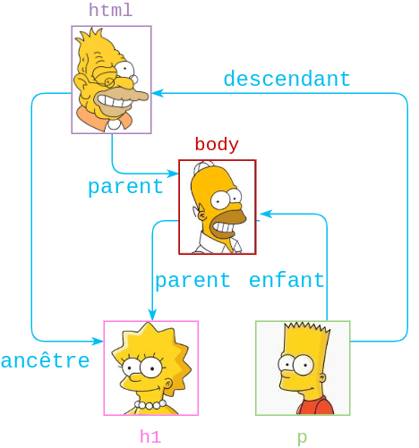

<!DOCTYPE html>
<html lang="en">
  <head>
    <meta charset="utf-8" />
    <meta name="viewport" content="width=device-width, initial-scale=1.0, maximum-scale=1.0, user-scalable=no" />

    <title>HTML - Précisions</title>
    <link rel="shortcut icon" href="./favicon.ico" />
    <link rel="stylesheet" href="./dist/reveal.css" />
    <link rel="stylesheet" href="./dist/theme/black.css" id="theme" />
    <link rel="stylesheet" href="./css/highlight/zenburn.css" />

    <link rel="stylesheet" href="./_assets/assets/css/quiz.css" />
    <link rel="stylesheet" href="./_assets/assets/css/slides.css" />

  </head>
  <body>
    <div class="reveal">
      <div class="slides"><section ><section data-markdown><script type="text/template">

# HTML - Précisions
</script></section><section data-markdown><script type="text/template">## Le titre (pour le navigateur)

```html [4]
<!DOCTYPE html>
<html lang="fr">
	<head>
		<title>Ada Lovelace - Wikiki</title>
	</head>
</html>
```


</script></section><section data-markdown><script type="text/template">## Les balises meta

```html [6]
<!DOCTYPE html>
<html lang="fr">
	<head>
		<title>Ada Lovelace - Wikiki</title>
		<meta charset="utf-8"/>
		<meta name="description" content="Hommage à Ada Lovelace, première programmeuse de l'histoire."/>
	</head>
</html>
```


</script></section><section data-markdown><script type="text/template">## Descendance

```html
<html lang="fr">
	<body>
		<h1>Ada Lovelace</h1>
		<p>Première programmeuse de l'histoire</p>
	</body>
</html>
```


</script></section><section data-markdown><script type="text/template">## Les chemins relatifs (liens)


</script></section><section data-markdown><script type="text/template">## Les chemins relatifs (images)


</script></section></section><section ><section data-markdown><script type="text/template">
# Plus d'éléments
</script></section><section data-markdown><script type="text/template">## Les commentaires

```html [2]
<body>
	<!-- Ce commentaire n'est pas affiché -->
	<p>Ce texte est affiché.</p>
</body>
```

<iframe style="background-color: white;" srcdoc="<!-- Ce commentaire n'est pas affiché -->
	<p>Ce texte est affiché.</p>"></iframe>
</script></section><section data-markdown><script type="text/template">## Les conteneurs

```html [2,5]
<body>
	<div>
		<p>Premier paragraphe</p>
		<p>Second paragraphe</p>
	</div>
</body>
```

<iframe style="background-color: white;" srcdoc="<body>
	<div>
		<p>Premier paragraphe</p>
		<p>Second paragraphe</p>
	</div>
</body>">
</iframe>
</script></section><section data-markdown><script type="text/template">## Les conteneurs (en ligne)

```html
<p>Première programmeuse de l'<span>Histoire</span></p>
```

<iframe style="background-color: white;" srcdoc="<body>
	<p>Première programmeuse de l'<span>Histoire</span></p>
</body>">
</iframe>
</script></section><section data-markdown><script type="text/template">## Les figures

```html
<figure>
		
</figure>
```

<iframe style="background-color: white; width: 100%; min-height: 60vh;" srcdoc="<figure>
		
</figure>"></iframe>
</script></section><section data-markdown><script type="text/template">## Les figures (avec légende)

```html [3]
<figure>
		
		<figcation>Ada Lovelace a créé le premier programme informatique, avant même que les ordinateurs n'existent!</figcation>
</figure>
```

<iframe style="background-color: white; width: 100%; min-height: 60vh;" srcdoc="<figure>
		
		<figcation>Ada Lovelace a créé le premier programme informatique, avant même que les ordinateurs n'existent!</figcation>
</figure>"></iframe>
</script></section><section data-markdown><script type="text/template">## Les citations

```html
<blockquote>
		<p> Beaucoup de personnes […] </p>
</blockquote>
```

<iframe style="background-color: white;" srcdoc="<blockquote>
		<p> Beaucoup de personnes […]</p>
	</blockquote>"></iframe>
</script></section><section data-markdown><script type="text/template">## Les citations (avec auteur·e)

```html [3]
<blockquote>
		<p> Beaucoup de personnes […]</p>
		<cite>Ada Lovelace</cite>
</blockquote>
```

<iframe style="background-color: white;" srcdoc="<blockquote>
		<p> Beaucoup de personnes […]</p>
		<cite>Ada Lovelace</cite>
	</blockquote>"></iframe>
</script></section><section data-markdown><script type="text/template">## Le favicon

```html [3]
<head>
	<title>Wikiki</title>
	<link rel="icon" type="image/png" href="images/chimp.png"/>
</head>
```


</script></section></section><section ><section data-markdown><script type="text/template">
# Bonus: Extension Emmet

[https://www.emmet.io/](https://www.emmet.io/)
</script></section><section data-markdown><script type="text/template">### Installation (Sublime Text)

1. Ouvrir l'invite de commande: `Ctrl + Maj + P` (`Cmd + Maj + P`)
2. Ecrire: `Package Control: Install Package`
3. Dans la liste, chercher `Emmet` et valider
</script></section><section data-markdown><script type="text/template">### Utilisation (Sublime Text)

1. Ecrire le raccourci `html:5`
2. Ouvrir l'invite de commande: `Ctrl + Maj + P` (`Cmd + Maj + P`)
3. Ecrire: `Emmet: Expand Abbreviation`</script></section></section></div>
    </div>

    <script src="./dist/reveal.js"></script>

    <script src="./plugin/markdown/markdown.js"></script>
    <script src="./plugin/highlight/highlight.js"></script>
    <script src="./plugin/zoom/zoom.js"></script>
    <script src="./plugin/notes/notes.js"></script>
    <script src="./plugin/math/math.js"></script>
    <script>
      function extend() {
        var target = {};
        for (var i = 0; i < arguments.length; i++) {
          var source = arguments[i];
          for (var key in source) {
            if (source.hasOwnProperty(key)) {
              target[key] = source[key];
            }
          }
        }
        return target;
      }

      // default options to init reveal.js
      var defaultOptions = {
        controls: true,
        progress: true,
        history: true,
        center: true,
        transition: 'default', // none/fade/slide/convex/concave/zoom
        plugins: [
          RevealMarkdown,
          RevealHighlight,
          RevealZoom,
          RevealNotes,
          RevealMath
        ]
      };

      // options from URL query string
      var queryOptions = Reveal().getQueryHash() || {};

      var options = extend(defaultOptions, {"transition":"slide","progress":false}, queryOptions);
    </script>


    <script>
      Reveal.initialize(options);
    </script>
  </body>
</html>
